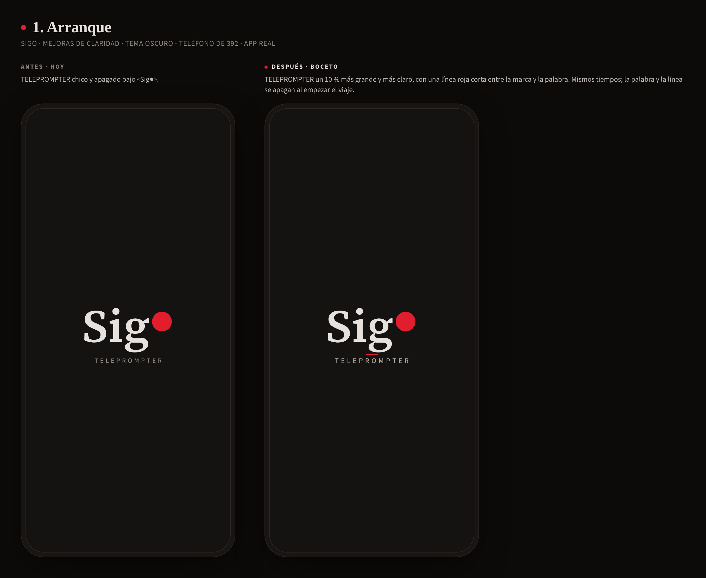
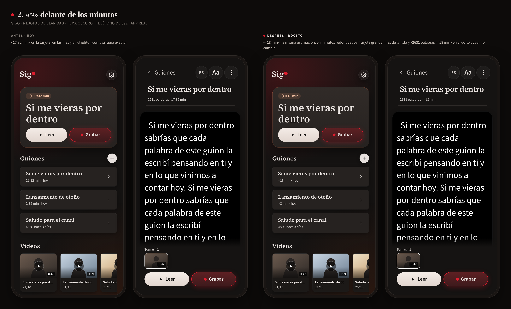
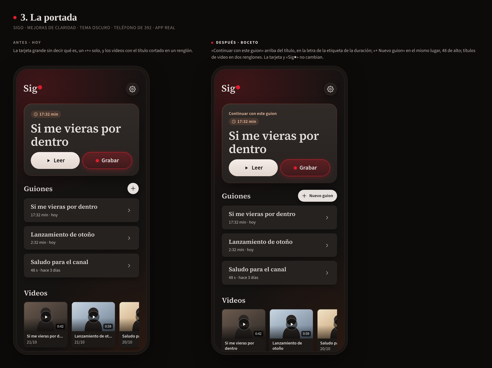
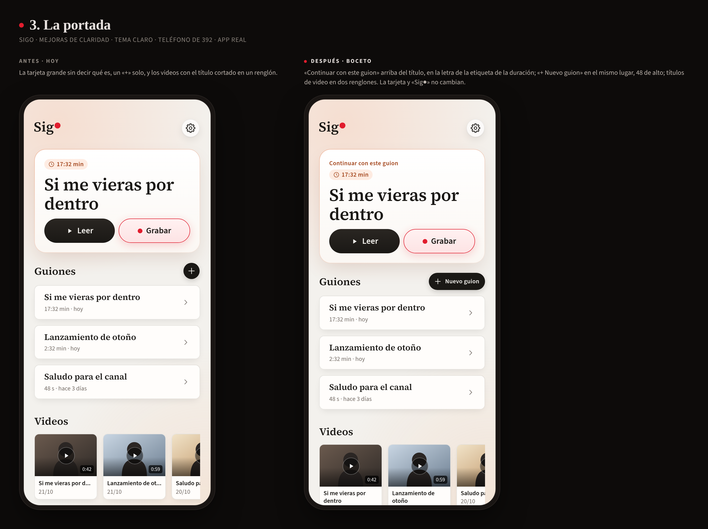
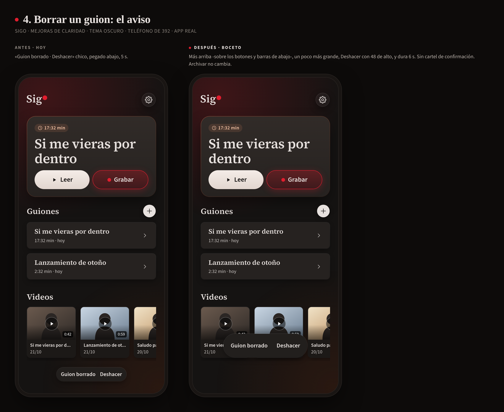
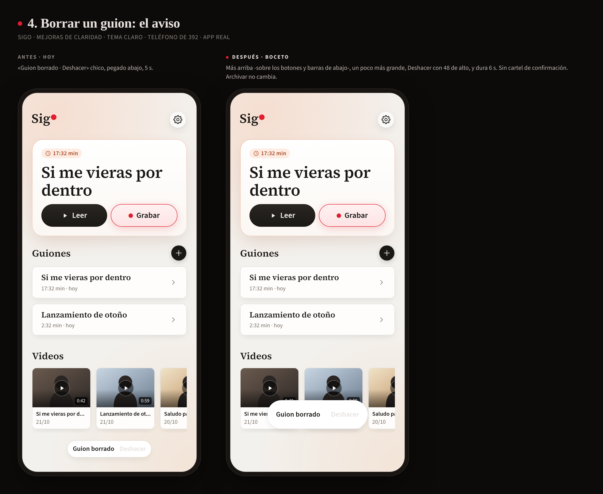
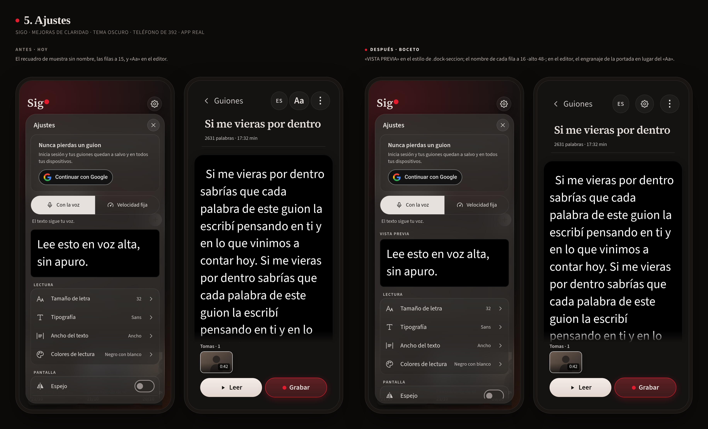

Paso 1, solo bocetos. Cada lámina: a la izquierda la app de hoy, a la derecha la misma app -sus componentes y su CSS- con la mejora, en un teléfono de 392 de ancho. La 3 y la 4 también en tema claro.






